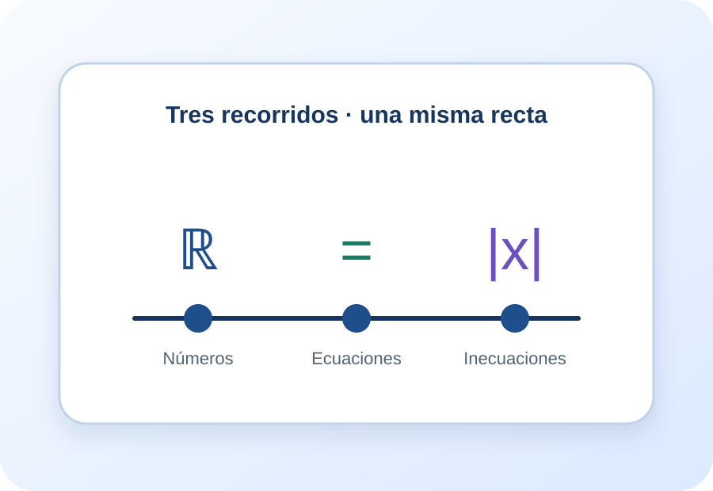

Habitar la recta real
Conjuntos, propiedades, recta, potencias, raíces, exponentes fraccionarios y logaritmos.
Abrir cápsulaMaterial de apoyo para el Trabajo Práctico de Reales
Números reales · Ecuaciones · Inecuaciones y valor absoluto
Tres experiencias de microaprendizaje no lineales, multimodales e interactivas. Cada cápsula organiza la teoría de la cátedra en cuatro nodos, actividades con devolución, una bitácora local y recursos audiovisuales.
Elegir una cápsula
Tres entradas posibles
Conjuntos, propiedades, recta, potencias, raíces, exponentes fraccionarios y logaritmos.
Abrir cápsulaEquivalencia, uniformidad, métodos, condiciones iniciales y expresiones racionales.
Abrir cápsulaMonotonía, intervalos, operaciones, signos, condiciones de existencia y valor absoluto.
Abrir cápsulaPropuesta de recorrido
Podés comenzar por cualquier nodo. El progreso muestra qué nodos visitaste y el taller integrador permite revisar decisiones antes de mirar las resoluciones. Para completar la experiencia, recorré los cuatro nodos de cada cápsula, resolvé los tres casos y guardá una idea en la bitácora.
Fundamentación
La teoría, los ejemplos y las actividades se construyeron a partir de las presentaciones de las tres semanas, el apunte completo, el resumen para el taller, el Trabajo Práctico y las resoluciones proporcionadas. Los videos externos se presentan como ampliación opcional y no reemplazan los materiales originales.